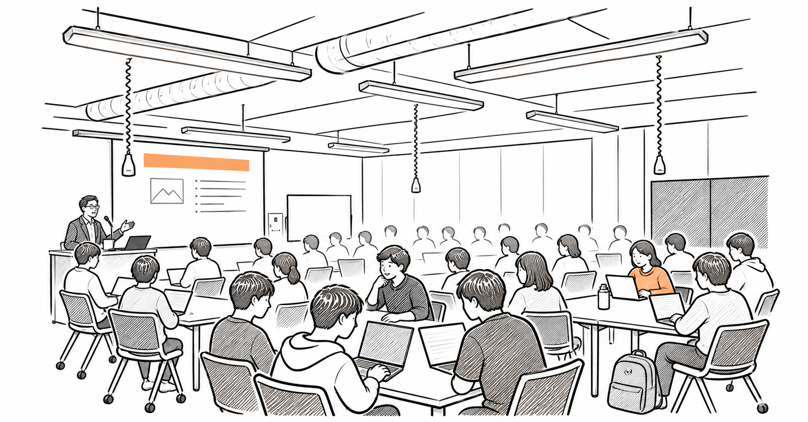
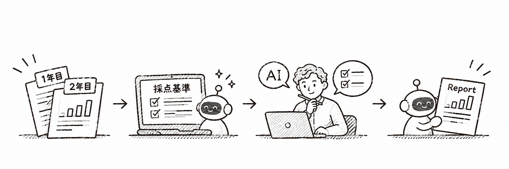
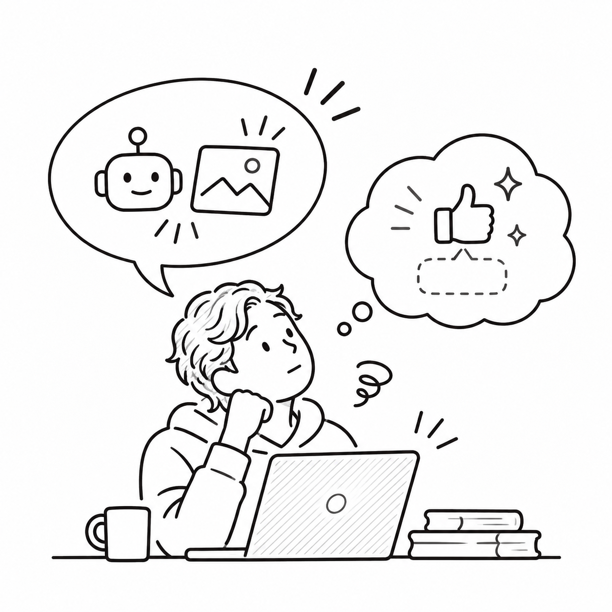

ＡＩで楽したり
楽しんだり
2026.11.27 ノムラ
自己紹介
ノムラ
株式会社LegalOn Technologies
デザイナー

まずは古参ムーブ
デザイナーから働きかける
"チームビルディング"
- InHouseDesigners #3
から参加
2018年のイベント

前回のチョットAI会
全然、
チョットじゃない
もっとハードル下げていこうぜ！

このLTから
持ち帰ってほしいこと
無いです
「へー」「ふーん」と思ってもらえたら十分です。
話のネタ
- しんどい作業を生き甲斐に変えた話
- ワークショップのアウトプット評価にAI使った話
- 自分に合った英語トレーニングの構築と実践
- 360度評価をAIに押し付けたらその評価制度が無くなった
話のネタ
- しんどい作業を生き甲斐に変えた話
- ワークショップのアウトプット評価にAI使った話
- 自分に合った英語トレーニングの構築と実践
- 360度評価をAIに押し付けたらその評価制度が無くなった
今日の話
しんどい作業が、
生きがいになるまで
大学で非常勤講師を
やってまして
4〜5月・週1回・全8回
ワークショップ形式の授業
社会課題を見つける
解決策を考える
動画でアウトプットする

成績をつけるのが
しんどい
50〜60人分のレポートを評価
めちゃ時間かかるし、
評価軸がブレまくる
ていうか全員100点でよくない？

となればAIの出番だ
AIに任せた方がむしろ誠実では？と考える
- 過去データから２年目までのレポートと
採点結果をすべてAIへ - AIが基準を整理採点基準と根拠を
書き出させる - 自分で修正AIが出した基準を
確認して直す - AIが採点修正した基準で
新しいレポートを採点

採点基準こんな感じ（一部）
| 区分 | 項目 | 配点 | 見るポイント |
|---|---|---|---|
| B アイデア | B1 件数 | 0.1点/件(上限2) | 重複・サンプル同文は除く |
| B2 質・広がり | 0〜2 | 説明・展開があり、リサーチや課題設定と繋がっているか | |
| C ソリューション | C1 新規性 | 0〜2 | 模倣でない独自の着眼・組み合わせ |
| C2 価値 | 0〜3 | 誰のどんな行動変容を生み、どんな価値をもたらすか | |
| C3 リサーチ活用 | 0〜4 | リサーチ→課題→解の導出が読み取れるか | |
| D チームワーク | D1 貢献 | 0〜3 | 自チーム内での役割遂行・主体性の具体性のみ |
学生同士で価値観や視点を共有しあって、
それをデザインに反映できてることを重視
ここでもう一捻り
「講師が読んで嬉しい感想を
ピックアップして」
だるいレポート採点のその向こうから光が差した
これ無しではもう生きていけない
もはやこれは生きがい
真面目な話
「それAIで簡単にできるんでしょ」
どれだけ手をかけて作っても、そう言われる時代
AIに褒めてもらっても、どこか空虚
デザイナーは承認欲求の権化なので（私見）、
これは由々しき事態
ものづくりのモチベーションを
保てなくなっている人もいるのでは
今回の私のLTが何かの参考になったら幸い

シメの古参ムーブ
ここみたいな小さなコミュニティでいろいろ共有しあって、
ふんわり承認欲求満たしていったら良いんじゃない？